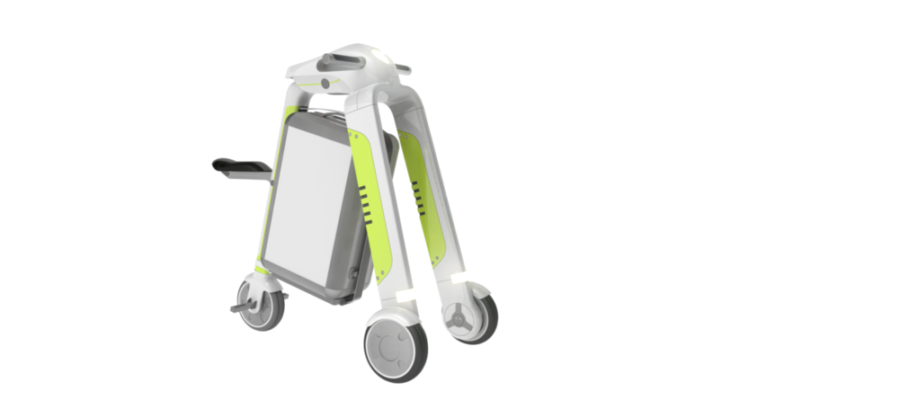
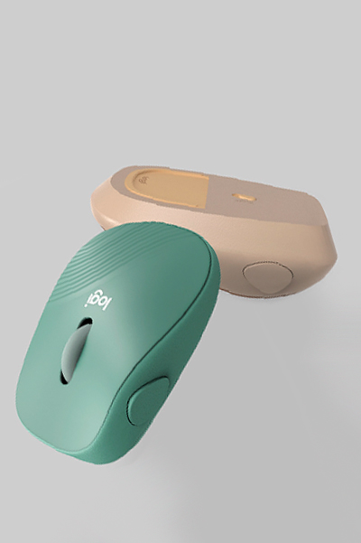
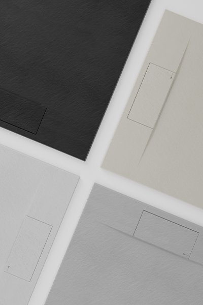
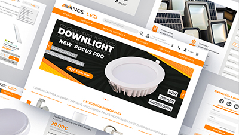
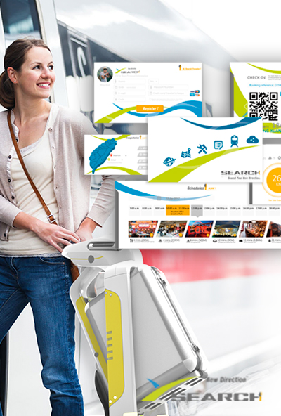
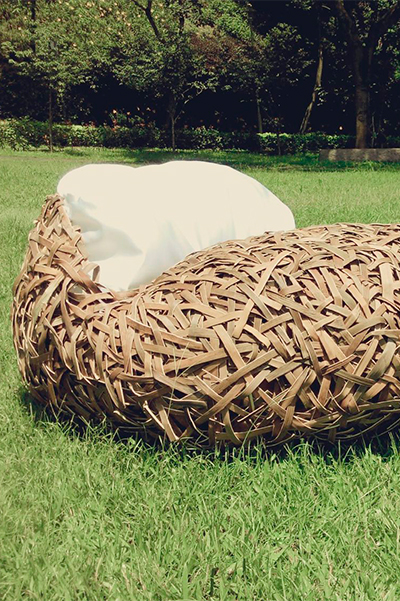
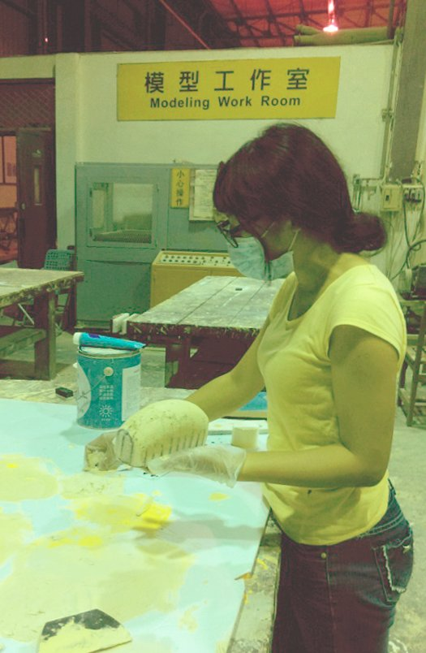

I am an industrial and product designer based in Madrid, focused on creating meaningful experiences.
Industrial Design taught me how to make things. It took longer to learn that the making is the last part. What holds my attention is what comes before — the question asked at the beginning, the constraints that shape the middle, the reason behind every decision that follows.
That method moves across scales without changing: something you hold, something you move through, something you recognise before you can name it. The outcome shifts; the way of getting there does not.
Bring me a product, a campaign, an identity, or the strategy that holds them together — I will start with the thinking, and let's make design make sense.

Awards
2023 iF Design Award
01Final Entry / Desliz Faucet
2018 Taichung World Flora Exposition
02Honorable Mention / Betal LOHO
2016 Taichung A+ Cultural Heritage Creative Festival
03Final Entry / SEARCH Intelligent Travel System
2016 Red Dot Award: Design Concept
04Final Entry / Temper.Care Box
Guess the material — five rounds
What is this made of?
Sense before surface.
An industrial and product designer based in Madrid.
Opens a mail to apiadesigner@gmail.com